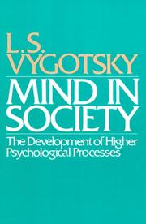

Mind in Society: The Development of Higher Psychological Processes
Book·Lev Vygotsky, 1978·社会中的心智

An English compilation of Vygotsky's main essays, including the discussion of the zone of proximal development.
- Author
- Lev Vygotsky
- Year
- 1978
- Difficulty
- Advanced
- Kind
- Primary text
- Schools
- Sociocultural Theory
- Core theories
- Zone of Proximal Development
Editions
- Chinese edition 《社会中的心智》 [苏]列夫·维果茨基 著 / [美]迈克尔·科尔等 编 / [俄罗斯帝国,苏联] 列夫·维戈茨基 · tr. 麻彥坤 · 北京师范大学出版社 · 2018 Douban 8.1 (46 ratings) Douban page ↗
- English edition Mind in Society: The Development of Higher Psychological Processes L. S. Vygotsky (ed. Michael Cole, Vera John-Steiner, Sylvia Scribner, Ellen Souberman) · Harvard University Press · 1978 Open Library ↗